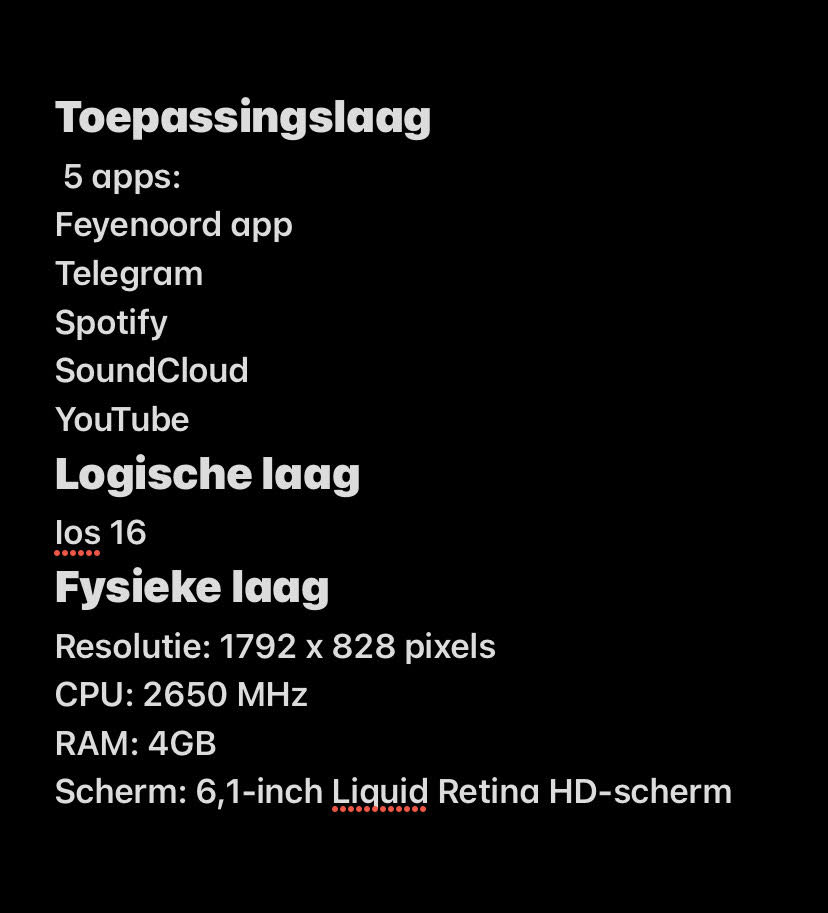

Een 3-lagenmodel, ook wel bekend als een 3-tier architectuur, is een organisatiemodel dat wordt gebruikt in de informatica en softwareontwikkeling om de structuur en het ontwerp van een applicatie of systeem te organiseren.
Het model is opgebouwd uit drie afzonderlijke lagen of niveaus die specifieke functies en verantwoordelijkheden hebben. Deze lagen zijn:
Toepassingslaag:
De toepassingslaag, ook wel de applicatielaag genoemd, is de bovenste laag in een 3-lagenmodel voor netwerkcommunicatie, zoals het OSI-model.
Deze laag speelt een cruciale rol in het verzenden en ontvangen van gegevens tussen applicaties en gebruikers.
Hier vinden de daadwerkelijke toepassingen plaats, zoals webbrowsers, e-mailclients en instant messaging-apps.
De toepassingslaag zorgt voor een abstractie van de onderliggende netwerkinfrastructuur en biedt diensten zoals gegevenscodering, authenticatie en gegevenspresentatie aan applicaties.
Protocollen op deze laag omvatten HTTP, SMTP, FTP en DNS, die applicaties in staat stellen om gegevens te verzenden, ontvangen en interpreteren over het netwerk, waardoor naadloze communicatie mogelijk is.
Logische laag:
De logische laag, ook wel bekend als de transportlaag, vormt een essentieel onderdeel van het 3-lagenmodel voor netwerkcommunicatie, zoals het OSI-model.
Deze laag is verantwoordelijk voor het beheren van end-to-end communicatie tussen apparaten op verschillende netwerken.
De logische laag verdeelt gegevens in pakketten, voegt bron- en doeladressen toe en zorgt voor foutcontrole en foutcorrectie.
Het biedt ook diensten zoals multiplexing (het combineren van meerdere gegevensstromen in één verbinding) en demultiplexing (het scheiden van gegevensstromen) om efficiënte en betrouwbare gegevensoverdracht te garanderen.
Belangrijke protocollen op deze laag zijn TCP (voor betrouwbare gegevensoverdracht) en UDP (voor onbetrouwbare, maar snellere overdracht).
De logische laag is van vitaal belang voor internet- en netwerkcommunicatie.
Fysieke laag:
De fysieke laag, de onderste laag in een 3-lagenmodel voor netwerkcommunicatie, speelt een fundamentele rol bij de feitelijke overdracht van gegevens over fysieke media zoals kabels en draadloze signalen.
Deze laag richt zich op de elektrische, mechanische en signaalkenmerken van de communicatie-infrastructuur. Deze laag richt zich op de elektrische, mechanische en signaalkenmerken van de communicatie-infrastructuur.
De fysieke laag zorgt voor de fysieke verbinding tussen apparaten en regelt de overdrachtssnelheden en transmissiemodi, zoals half-duplex of full-duplex.
Bovendien behandelt het frequentiebandbreedten en ruisniveaus om een betrouwbare gegevensoverdracht te garanderen. Dit omvat bijvoorbeeld Ethernet-kabels, glasvezelverbindingen en draadloze radiosignalen in een netwerkomgeving.
